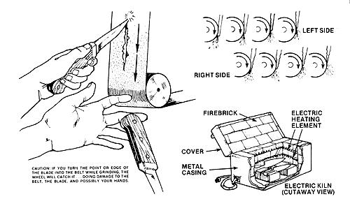

Since used saw blades, whether crosscut, buzz or hand, are fairly consistent metallurgically, come in a variety of ideal sizes and thicknesses, and are very easy to obtain, I suggest that you tap this wonderful source of steel (especially if you're a beginner) for any knives you want to make in your own home workshop.
I use carbon saw-blade stock which I scrounge from lumber mills and scrap yards. These blades are made from top quality carbon steel and are ideal for knifemaking.
The perfect knife blade should be hard so that it won't become dented and scratched, tough enough so it won't bend or break, and wear-resistant enough to hold a good edge. (If the blade is too hard and too wear resistant, of course, it'll be difficult to sharpen. Use some judgment.) The perfect blade should also be made of stainless steel so it won't darken or rust.
Knives come in all shapes and sizes. Look around. Test and compare various designs. Then, once you've decided upon a shape and size that suits you best, draw a full-scale outline of the blade (including tang!) on a piece of cardboard or poster board.
Cut the silhouette out with a razor knife or small band saw. Pretend it's a real knife. Hold it. Heft it. How does it feel? Keep the outline around for a day or two and see if its shape "wears well" with you. If not, redesign the blade as many times as necessary while it's still in cardboard form. Only after you're completely sure that you're satisfied with the proposed blade should the template be used to trace the outline onto a piece of steel.
There are two basic kinds of knife handles: [1] scale or slab, in which two pieces of wood or other material are used to sandwich the blade's tang (or shank), and [2] one-piece, which, just as the name implies, uses a single piece of material to surround the tang.
As you design your knife blade, then, consider the type of handle the finished tool will have. If it will be a "full-tang scale handle," for instance, the silhouette of the shank will, of course, be the same as the silhouette of the whole handle. In the case of a "one-piece handle with tang embedded," it will not.
Once you've chosen your knife's shape and size, have it designed and have the steel for its blade in hand, you're ready to cut out the blade's rough shape with a cutting torch or band saw.
A torch does this job quite nicely and may be easier to find than a band saw which will cut through hard steel. Furthermore, a torch is usually faster than a band saw (especially when you're knocking out production runs of blanks from large pieces of stock). For these reasons, I always prefer to use a torch when I'm roughing knife blades out of old carbon steel saw blades.
Start your knife blade by first thoroughly cleaning the steel that you intend to cut into shape. If necessary, grind the rust off the old saw blade with a disc grinder or sandpaper.
Next, (using your cardboard pattern as a guide) trace off the silhouette of the knife blade (including tang). If you'll be using a cutting torch to rough the blade out, draw the outline about 1/8-inch larger in all directions than you want the finished silhouette to be (to allow for the cleanup grinding that will be necessary). Chalk, soapstone, a marking pen or whatever you have handy may be used to lay out the design.
After the blade has been rough-cut, grind off all the torch marks from around its circumference. (The idea is to leave a completely clean and square edge all the way around the blank.) If the knife is to have a "molded" handle, this is also the time to draw the grips in all pencil and then grind away any unwanted steel (using an overlapped rough abrasive belt on a belt grinder).
Now hold the blade and pretend to use it. Swing it through the air with the movement for which it is being designed. If it's a carving knife, use it to cut up an imaginary turkey. If it's a paring knife, chop a few non-existent onions with the blade. Is your unfinished knife graceful in its intended work? Does it naturally "want" to do what it's supposed to do? Do the lines of force extending from your arm and hand follow directly to where the cutting edge meets the turkey or onions?
Raise the blade to the light and examine its silhouette. Run it across a grinding wheel a couple of times, then hold it up to the light again. Carve off another piece of "turkey" or chop a few more "onions." Then use the grinding wheel to trim away a little more of the metal that still seems to "get in the way."
In your mind's eye, observe the line which flows down the knife's spine from the (still missing) outline of its finished handle to the tip of its blade. Check for desired finger clearance. Think about any plans you may have for a bronze hilt or butt, and consider any future etchings that you might want to put on either the blade or handle. Conceive quite clearly how you intend to finish the knife. Sooner or later, and at a certain point, you'll no longer be guessing. You will know that the shape of your blade is right.
This is, of course, the essential step in knifemaking. It is also one of the most crucial and difficult. (There are a number of different ways to shape the edge of a blade, giving it anything from a convex to a concave shape.)
Begin grinding the blade by running it along your wheel in long, even, full length passes. Be careful not to pause or stop in any one place (if you do, the spinning wheel will grind deeper in that spot). Unless your hand is steadier than mine, however, you will, no matter how hard you try, grind both high and low spots into the blade as you go along. Don't worry about it. You'll soon develop a "feel" for this work that will make you automatically "lighten up" when you come to a depression and "hold longer" as you pass over a high area.
In other words, grinding (like life itself) quickly becomes self-corrective, due to the immediate feedback that you'll develop through your sense of touch (a process of communication). Strive for this skill, work on it, as you hone your blade approximately 90 percent complete. Then save the last 10 percent of stock removal for the final regrinding/polishing steps below.
Whatever kind of blade you're making, grind it carefully and evenly. If it is of a "dropped design," however, and the dropped portion is to serve as a finger guard, remember to leave the last 1/8-inch or so on the end of the blade nearest the handle ungrounded. Make sure that this area (where the grinding stops at the base of the blade to form the guard) is faced off very precisely and sharply.
Now begin to refine the shape of the blade by working it over the wheel of a belt grinder. Remember: If you turn the point or edge of the blade into the belt, the wheel will catch it, doing damage to the belt, the blade and possibly your hands. Be very careful about this.
Use a 40-grit belt to bring the blade down close to the thickness you desire and to take out the marks left from the high-speed grinder.
This, of course, will leave a set of much finer 40-grit tracks, so regrind the steel again with an 80-grit belt to remove the 40-grit marks. Try to get the blade as nearly perfect as you can this time through, because it'll be the last full grinding operation that you'll use on the steel prior to tempering it. When you finish with this step, the blade should look just about perfect (except for its rough 80-grit texture).
Then, before tempering, grind around the silhouette of the entire blade (tang included) with a 120-grit belt to minimize the stress on the edges of the steel during the heat-treating process.
There are three steps in completely heat-treating a carbon steel blade: [1] hardening, or heating the steel to a cherry red and quenching it in oil or a brine solution, [2] tempering or drawing, which takes the brittleness out of the hardened steel by slowly heating it in an oven until it turns a certain prescribed color, and [3] annealing of the tang and backbone of the blade, that is, heating these portions of the shank to a deep blue, followed by a slow cooling that makes the steel tough and flexible so the blade cannot snap.
To harden your steel, bring the entire blade to an even bright red (1,425 to 1,450 degrees Fahrenheit), then plunge it into a quenching bath of tempering oil (if you don't have the "real thing," try a half-and-half mixture of used crankcase oil and diesel oil). Be sure the tongs or rack holding the blade do not cover a crucial area of the edge (they must touch only the back of the blade or its tang).
You can use an acetylene torch for medium and small knives, but a small, ceramics-type electric kiln is preferable for knives of all sizes. A gas-heated kiln works well if it is large enough to get the knives in and out of. The unit need only be slightly longer than the length of the longest knife blade, and only about four inches wide for optimal heating speed.
The second step in heat-treating is designed to soften a piece of steel very slowly until it reaches a precise hardness, in this case, the point at which the brittleness is removed from the blade you're working on while leaving the steel hard enough to hold an edge and otherwise serve as a knife.
It should be kept in mind, too, that some knives should be tempered differently than others, depending on the "sharpenability" desired and the kind of use the tool is designed for. A long vegetable knife, for example, is a lot of work to sharpen and is subjected to much less strenuous usage than, say, a survival knife, and, in my opinion, should be tempered softer than the second implement.
When heated, steel turns from a silver gray to a light gold or straw color, then to darker and darker shades of bronze before becoming reddish, then a bright and very striking vermilion, a light blue or peacock, and, finally, the dark blue of soft steel. The metal becomes progressively softer through this color range, with the cutoff point between hardened and softened steel somewhere between the peacock blue and dark blue stages.
I've found the point of best compromise for most carbon saw-blade steel knives somewhere in the medium "straw" range, which produces a blade hard enough to take and hold an edge, but with enough flex to make it nearly impossible to break. For a particularly hard blade, I temper at the light straw color, while some makers of vegetable knives draw their steel to a much softer (vermilion) color.
For starters, you can't go too far wrong if you clean your hardened blade to an even shine with an old 80- or 120-grit belt and heat the entire piece of steel slowly and evenly in an oven to about 450 degrees. Watch the blade as it turns from silver gray to the color you desire, then take it from the oven and allow it to cool.
The third, and final, part of the heat-treating process consists of carefully heating (thus softening) the handle portion (tang) and the back and center of your blade just down to its ground edge. Turn the specified areas a deep blue but do not allow the color to run into the cutting edge or its hardness will be lost and the knife must be rehardened.
I do this annealing with a small welding tip on my acetylene torch and I keep a bucket of water handy so I can dip the ground area of a blade quickly whenever I see the heat running too close to the edge. WARNING: Never douse the whole blade during this annealing process. If you do, the metal may regain its hardness while remaining blue, then crack if you later try to straighten it.
If your knife will have a very fine (thin) edge, you should do the final grinding of the blade after the metal is tempered (because a very fine edge will warp during the heating process).
Grinding an edge after it is tempered, however, is also risky, since the heat generated by the final grind can remove some of the steel's hardness. If you do not have a water-cooled belt grinder, then, go slow and dip the blade in water after every one or two passes across the wheel. And use a new belt on your belt sander for this job because new abrasives grind with less heat than either old ones or grindstones. (I like a 40-grit belt for this process.)
These last grinder marks can be polished away with 80-, then 120-, 240-, 320-, 480- and 600-grit belts. The final 600-grit marks are then buffed off leaving a mirror finish. (This is important, not only for the appearance of the blade, but for ease of cleaning.)
Keep two things in mind each time you go over the blade. First, do not heat the cutting edge. (If it turns blue, or darkens significantly, you have to either carefully grind that portion of the blade away, or retemper the steel and start over again from there.) Second, maintain and perfect the clean and well-defined grinding lines of the knife. (Occasionally vary the angle of your progressively finer grinding so you can see if you're gutting down past previous grit marks.)
If your knife will have slab handles, you will most likely fasten the slabs to the shank of the blade with epoxy cement and rivets or pins.
Carefully determine the location of the rivet or pin holes. (Rivets should be placed in large flat areas of the handle so that the edges of their heads will not be ground away as the handle is finished. Pins, which are smaller and take up less space, can be placed closer to a handle's edges.)
After marking and drilling the main rivet or pin holes, two to four for most knives, drill a minimum of another six to eight smaller "epoxy rivet" holes in a pattern around them. (The more of these you have, the more invincible the bond between the tang and slabs will be.)
Ordinary brake-shoe rivets are excellent for holding a knife handle together. You can get them in either steel or brass from any good auto-supply store and the ones you'll want come in two size ranges: the five series and the seven series.
These rivets each have a long shank with a flat head, and, at the end of the shank, each of the fasteners has a hole which measures about 3/16-inch deep. Now, here's the trick: Although they were never intended to be used in this manner, you'll quickly discover that the shank of the size five rivets can be hammered into the holes of the size seven rivets, thereby forming a very tight male-female press fit that'll hold your knife handles in place till the cows come home.
Wood, especially such tropical hardwoods as lignum vitae, cocobolo, pau-Brazil, partridge wood, ebony, greenheart, rosewood and padouk, makes excellent knife handles. Manzanita burl, black walnut burl, apple wood, desert ironwood, bird's-eye maple, and other closegrained, hard and beautiful domestic woods also work very well for this purpose, as does Micarte (phenolic resin impregnated into wood, paper, linen cloth, cotton and other semiporous materials), European stag, bone, whales' teeth, etc. (Personally, I feel that these last "more natural" materials should no longer be used if it will help take the pressure off the poor creatures which produce them.)
Trace your handle design onto a thoroughly dried piece of wood or other appropriate material that,when added to the thickness of your knife blade's tang, is just a little thicker than you want the implement's finished handle to be.
Cut the shape out on a band saw, then flip it up 90 degrees and split it right down the middle (to make two identical halves that will be riveted, one on each side, to the shank of your knife blade). These two handle halves should be just a hair longer than the blade's tang and you should take the time to cut them out very carefully. The more precisely you shape these two pieces of wood, the less work you'll have beveling the slabs flush with the knife's shank. Watch for cracks and checks in the wood as you work.
Sand the insides of the slabs as flat and smooth as possible with an 80-grit belt on the flat support section of your sander. (I usually "reverse" the two halves of the handle before I do this, so their "outsides" become "insides," because the planed surface of the stock's outside is generally flatter to start with than the hand-sawed split inside.)
It is essential to the function and the appearance of the finished knife that there be no gaps between the slabs and the tang. Epoxy can be used to completely fill any small cracks, of course, but it will be unsightly and, possibly, weaker than a perfect wood-to-metal-to-wood mating. Take whatever time you need to make this fit as precise as possible. This is one of the features that knowledgeable people always study when purchasing a custom-made knife.
After you've worked your slabs down until they mate to your knife blade's tang as perfectly as possible, you're ready to drill rivet, pin and epoxy holes in the wood to match the same holes that you've already drilled in the blade's shank.
Clamp one slab onto the tang with a pair of vise grips, and (with the wood down and using the holes in the metal shank as a template) drill the main rivet holes all the way through the wood on a drill press. Then remove the first slab, clamp the second piece of wood against the other side of the tang, and drill it in the same fashion. (Make sure the slabs are both snug against the blade's bolster and perfectly lined up with the shank during this drilling.)
Next, clamp each handle half to the tang (with the main rivet holes in the wood precisely lined up with the corresponding holes in the metal) and carefully mark the position of each of the epoxy holes. The wood is then unclamped before the smaller holes are drilled so that you can see exactly how deep to make each one. (It would be a disaster if you accidentally pushed them all the way through the wood so they could be seen from the "outside" of the finished handle.) I generally drill these epoxy relief areas about 1/8-inch deep.
Finally, clamp everything together once for practice. Then, following the directions on the containers of cement, mix your epoxy (I like a "five-minute industrial grade"), apply the adhesive to both sides of the metal shank and the insides of the handle slabs, form the three elements into a "sandwich," and rivet them together. (Take care that no epoxy gets inside the female rivets or they may not compress properly and you'll have a mess on your hands.) The whole assembly should be held firmly together in a vise and/or with vise grips until the epoxy (a certain amount of which will squeeze out during this process) sets up.
All that's left now for you to do is grind, sand and buff the handle to its final shape. Then clean it and let a heavy coat of a Danish oil, such as Watco-soak, into the wood for a half hour, followed by a second coat. Wipe away any excess oil from the second coat after it's had a chance to soak in, and let the handle dry overnight. The next morning you'll find that the preservative has penetrated the surface of the wood and hardened, sealing the grip against moisture.
You've now realized the personal satisfaction of making your own knife. But did you know that custom-crafted knives now sell for anywhere from $50 to several hundred dollars each, and more? Well they do, and that's why a number of us now ply this art as a fulltime professional craft. Perhaps, someday, you will too!
EDITOR'S NOTE: Although the foregoing article, excerpted from David Boye's excellent book, Step-by-Step Knifemaking (Rodale Press), does contain enough information to teach you how to make an excellent knife from an old saw blade the very first time you try, space limitations here have forced us to gloss over many of the finer points of the knifemaking craft. For a complete discussion of the art, however, you have only to purchase a copy of Mr. Boye's book or check the title out of your local library.
|
COURTESY RODALE PRESS Excerpted with permission from Step-by-Step Knifemaking: You Can Do It!by David Boye, copyright© 1977 by the author. A Rodale Press book. |
COURTESY RODALE PRESS Materials, and the anatomy of a hunting knife. |
 COURTESY RODALE PRESS Caution: If you turn the point or edge of the blade into the belt while grinding, the wheel will catch it, doing damage to the belt, the blade and possibly your hands. |
|
COURTESY RODALE PRESS Rivets, rivet holes and slab handles. |
COURTESY RODALE PRESS Finally, clamp everything together once for practice. Then (following the instructions on the containers of cement) mix your epoxy, apply the adhesive to both sides of the metal shank and the insides of the handle slabs, form the three elements into a "sandwich," and rivet them together. |
|